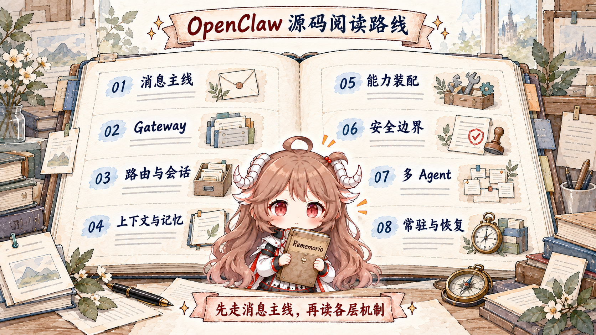

一条消息怎样跑完整个 Agent 回合
从 ChannelPlugin 接住消息，一路追到 sessionKey、队列、embedded agent、工具事件和 ReplyPayload。
阅读全文 →源码阅读 · 八篇路线
OpenClaw 的难点不在某一次模型调用，而在消息入口、会话所有权、工具执行、权限策略和跨重启状态怎样共同约束一次运行。路线图展示完整八篇顺序；当前先从总览主线开始。

从 ChannelPlugin 接住消息，一路追到 sessionKey、队列、embedded agent、工具事件和 ReplyPayload。
阅读全文 →从首帧 connect、hello-ok 与方法描述表，读到角色、scope、事件广播、断档刷新和慢消费者边界。
阅读全文 →拆开 binding、dmScope、identityLinks、sessionKey/sessionId，以及 steer、followup、collect、interrupt 四种时间语义。
阅读全文 →分开 workspace bootstrap、system prompt、transcript、memory 与 runtime view，再辨明 pruning 和 compaction 的持久语义。
阅读全文 →